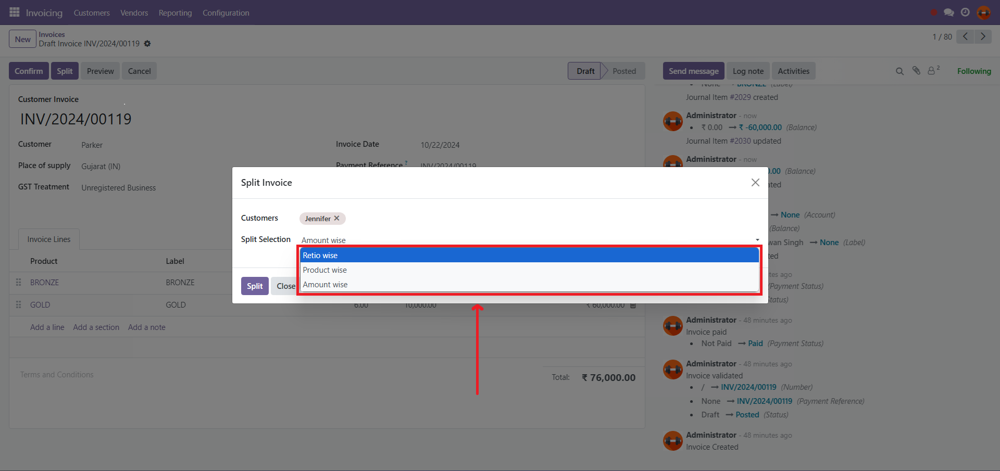
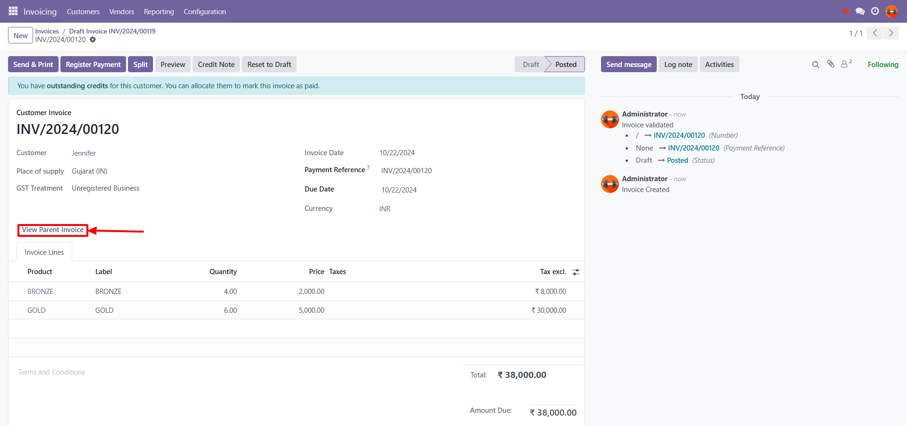
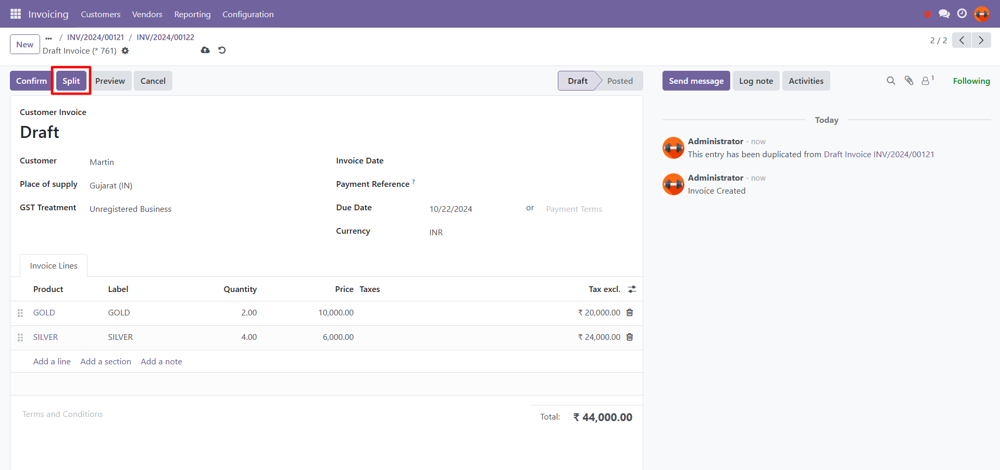
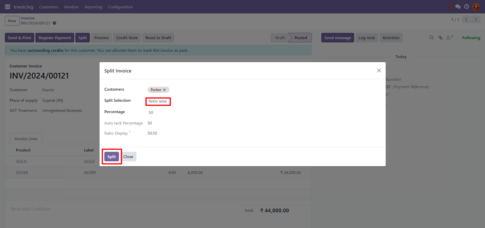
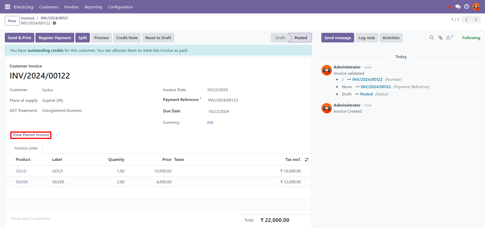
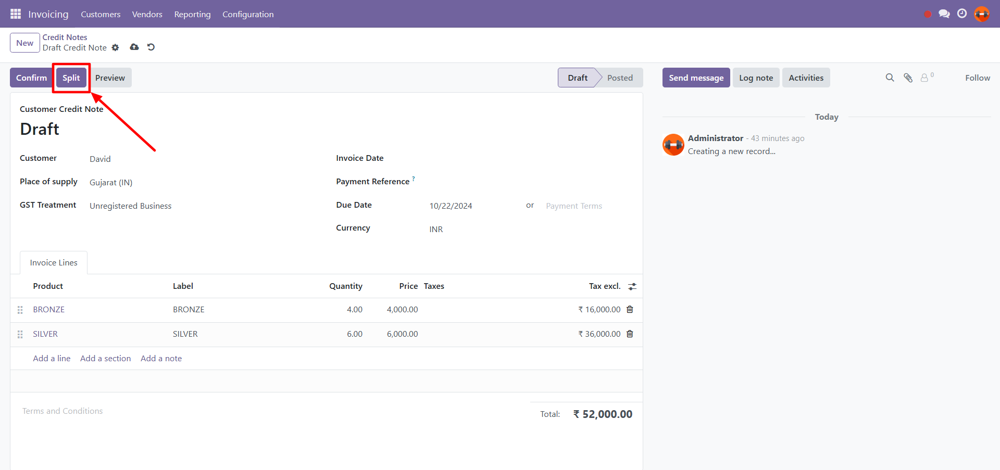
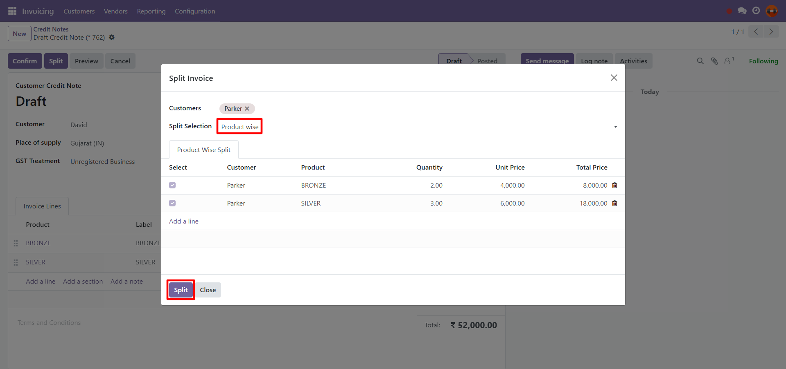

Overview
Transform your Odoo experience with our innovative module that simplifies the process of splitting invoices and bills. Effortlessly manage payments and maintain precise financial records, empowering you to streamline your accounting workflow and enhance your financial oversight.
Key Features
- Seamless splitting of Invoice, Vendor Bill and Credit note based on specified criteria.
- User-friendly interface for easy management.
- Integration with existing financial workflows in Odoo.
- Comprehensive tracking features to track split invoices and bills.
Workflow
Here’s how the VPCS Split Invoice and Bills Module works:
- Select the Invoice, Vendor Bill, or Credit Note that you wish to split.
- Choose the appropriate splitting method (percentage ratio, quantity, or total amount).
- Confirm the split to create new invoices in draft state.
- The original invoice is automatically split, and a detailed history of the split transactions is recorded.
Flow of Split Invoice
- First in the list,
Click on the "Split" button in the invoice.

- Split by Amount Wise:
Divide the total amount from the invoice to split, streamlining transaction adjustments.

- New Split Invoice by Amount Wise Option:
We get a new child invoice with the divided total amount from the parent invoice, and users can access the parent invoice of the split invoices.

Invoices have the functionality to be split by "Percentage Ratio Wise", "Percentage Ratio wise" and "Products wise" based on the selected method.
Flow of Vendor Bill
- First in the list,
Click on the "Split" button in the vendor bill.

- Split by Percentage Ratio:
Define a percentage ratio to split, enabling flexible financial management.

- New Split Vendor Bill by Percentage Ratio:
We get a new child bill with the divided total amount from the parent vendor bill, and users can access the parent bill of the split bills.

Vendor bills have the functionality to be split by "Percentage Ratio Wise", "Percentage Ratio wise" and "Products wise" based on the selected method.
Flow of Credit Note
- First in the list,
Click on the "Split" button in the credit note.

- Split by Products Wise:
Divide the invoice based on products and their quantity or services, ensuring accurate inventory tracking.

- New Split Credit Note by Products Wise Option:
We get a new child credit note with the divided total products or services from the parent credit note, and users can access the parent invoice of the split credit notes.

Credit notes have the functionality to be split by "Percentage Ratio Wise", "Percentage Ratio wise" and "Products wise" based on the selected method.